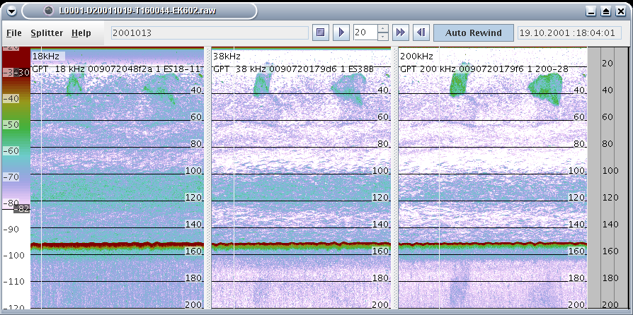
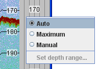
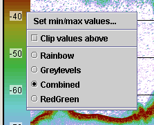
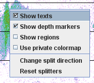

KORONA playbox allows for interactively exploring the processing.
It can be launched from KORONA relay.

Depth range menu

The panel on the far right shows the depth range of the data. Right-click here
to access a menu with options for setting the depth range:
Auto:
Visible depth range is set automatically to a reasonable range
based on the last 100 pings.
Maximum:
Visible depth range is set to the maximum (join) range during the last 100 pings.
Manual:
Visible depth range is user defined. Drag the two markers to
change the visible range or open a dialog by selecting Set depth range...
Set depth range...
Opens a dialog for setting the manually specified depth range.
Colormap menu

The panel on the far left shows the mapping from Sv values to colors.
Drag the two markers to change maximum and minimum values for the colormap.
Right-click to access a menu with these options:
Set thresholds...:
Specify the upper and lower thresholds in a separate dialog.
Set colour scale limits...:
Specify the maximum and minimum values for the colormap in a separate dialog.
Clip values above:
Toggle on and off using white instead of the colormap's
extreme color for values above the maximum value.
Rainbow, Greylevels, Combined, etc. :
Choose which colormap to use.
Echogram menu

Right-click in an echogram panel to access a menu with the following options:
Show texts:
Toggle on and off text labels in the upper left corner.
Show depth markers:
Toggle on and off depth labels and drawing of horizontal lines at constant depth.
Show tracks:
Toggle on and off plotting of tracks detected by the
Tracking module.
Show targets:
Toggle on and off plotting of targets detected by the
TS detection module.
Use private colormap:
Toggle on and off the use of a separate colormap panel for this echogram panel.
This separate colormap panel has options to show categories.
Change split direction:
When a data file has more than one channel, it is possible to view the channels either
side by side, or stacked on top of each other. The size of each echogram panel may be
adjusted by dragging the dividers with the mouse.
Reset split:
Sets equal distance between the splitters.